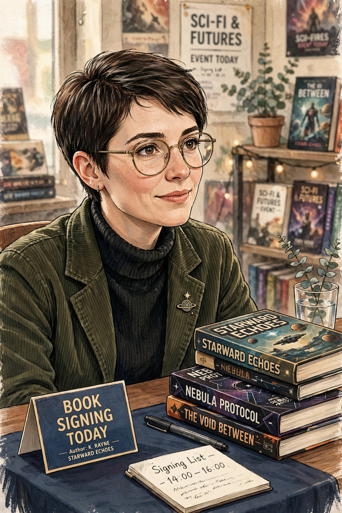

Patricia Oren Kearney Cadigan (born September 10, 1953) is an American science fiction author, whose work is often described as part of the cyberpunk movement. Bruce Sterling once called her "the Queen of Cyberpunk". Her novels Mindplayers (1987) and Synners (1991) explore the direct interfacing of human minds with technology, and Synners and Fools (1992) both won the Arthur C. Clarke Award. Her later work has included the Hugo Award-winning novelette "The Girl-Thing Who Went Out for Sushi" (2013).

| Born | September 10, 1953, Schenectady, New York, U.S. |
|---|---|
| Occupation | Writer |
| Genre | Science fiction, cyberpunk |
| Notable works | Mindplayers; Synners; Fools; Dervish is Digital |
| Awards | Arthur C. Clarke Award (1992, 1995); Hugo Award (2013); Locus Award |
Cadigan was born in Schenectady, New York, and grew up in Fitchburg, Massachusetts. She studied at the University of Massachusetts Amherst and the University of Kansas, where she worked with science fiction writer and editor James Gunn. She worked for the Hallmark Cards company before becoming a full-time writer in 1987. Her first novel, Mindplayers, concerns therapists who enter the minds of their patients. Synners (1991) depicts a society changed by brain implants that connect people directly to networks, presciently imagining the consequences of ubiquitous connectivity and viral media. Fools (1992) plays with implanted personalities and identity.
Cadigan moved to London, England, in 1996. She wrote the novelisations of the films Lost in Space (1998) and Jason X (2005), the techno-thriller Dervish is Digital (2001), and the authorised biography The Making of Alien Resurrection. In 2020 she published Alien: The Official Movie Novelization-related work and won further acclaim for the novella series begun in her Clarke Award-shortlisted work. She has been open about living with cancer, continuing to write and appear at conventions.